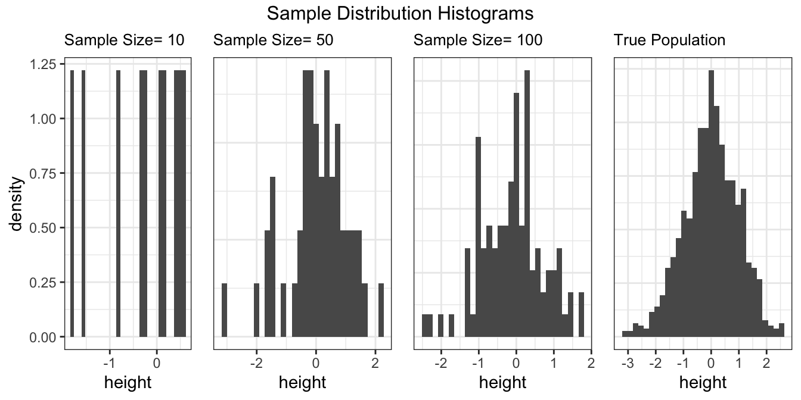
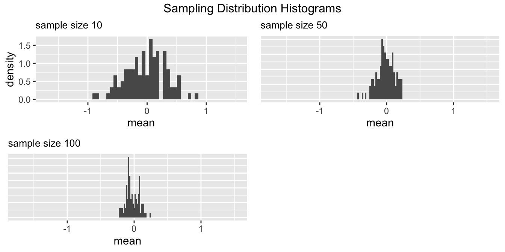

When learning statistical inference, it is important to
The samplingsimulatorr package aims to make these steps easy by taking care of the coding part, and so you can focus more on the learning part. The samplingsimulatorr package provides the following functions that will:
This document introduces to you the basic tools of samplingsimulatorr package and shows you how to use those tools.
generate_virtual_pop
To start learning sample distribution and sampling distributio, we need first to generate a virtual population. The generate_virtual_pop helps you generate a group of virtual population with the distribution of your choice. You just need to fill the size of the population you want to generate, the variable name of that population, and the distribution the population comes from. The function would then produce a nice tibble of the virtual population you sepcified.
library(samplingsimulatorr)
# generate population
pop <- generate_virtual_pop(1000, "height", rnorm, 0, 1)
head(pop)
#> # A tibble: 6 x 1
#> height
#> <dbl>
#> 1 -2.24
#> 2 -1.24
#> 3 -0.830
#> 4 -1.35
#> 5 -2.44
#> 6 -0.439draw_samples
After we have the virtual population, the next thing we need to do is to draw samples from that population. draw_samples function helps you draw samples of different sizes from that population. You can also repeatedly draw the samples of the same sizes multiple times to create a sampling distribution.
# the number of replication for each sample size
reps <- 100
# the sample sizes for each one of the samples
n_s <- c(10, 50, 100)
# create samples
samples <- draw_samples(pop, reps, n_s)
head(samples)
#> # A tibble: 6 x 4
#> # Groups: replicate [1]
#> replicate height size rep_size
#> <int> <dbl> <dbl> <dbl>
#> 1 1 0.315 10 100
#> 2 1 -0.549 10 100
#> 3 1 0.330 10 100
#> 4 1 -2.31 10 100
#> 5 1 0.695 10 100
#> 6 1 -0.631 10 100plot_sample_hist
After having the samples, we can then plot the sample histograms for different sample sizes using plot_sample_hist function.
# plot sample histogram
plot_sample_hist(pop, samples, height, n_s)
#> `stat_bin()` using `bins = 30`. Pick better value with `binwidth`.
#> `stat_bin()` using `bins = 30`. Pick better value with `binwidth`.
#> `stat_bin()` using `bins = 30`. Pick better value with `binwidth`.
#> `stat_bin()` using `bins = 30`. Pick better value with `binwidth`.
plot_sampling_hist
Since we have drawn the samples of the same size multiple times, we can then plot a nice sampling histogram. The plot_sampling_hist creates a grid of sampling distribution histogram of the mean of different sample sizes.
plot_sampling_hist(samples, height, n_s)
#> `stat_bin()` using `bins = 30`. Pick better value with `binwidth`.
#> `stat_bin()` using `bins = 30`. Pick better value with `binwidth`.
#> `stat_bin()` using `bins = 30`. Pick better value with `binwidth`.